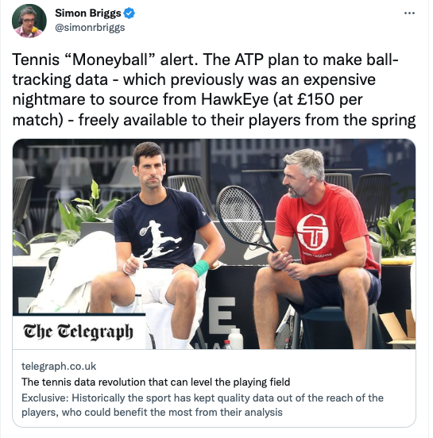
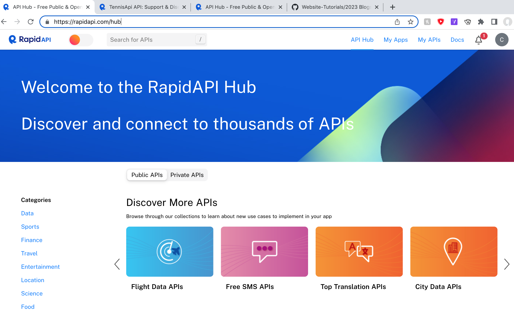
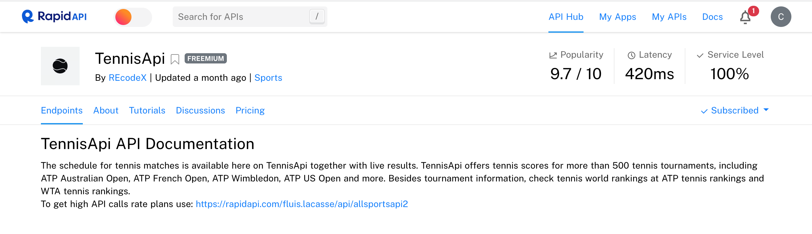
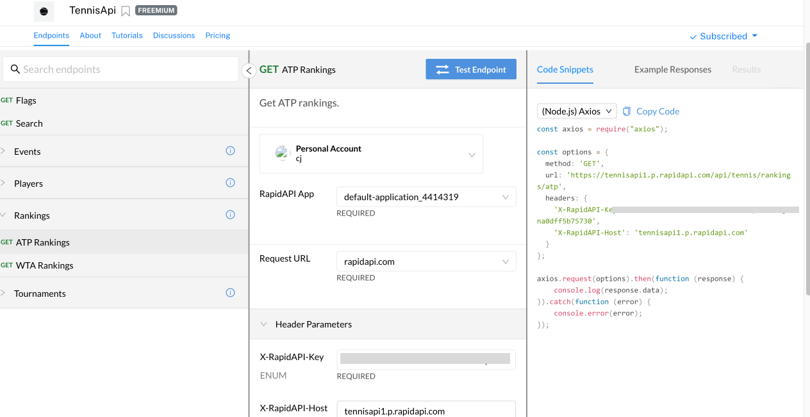
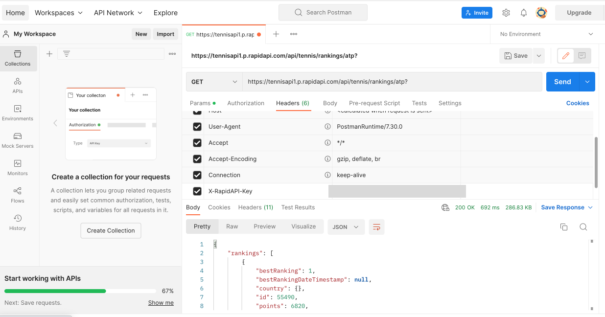
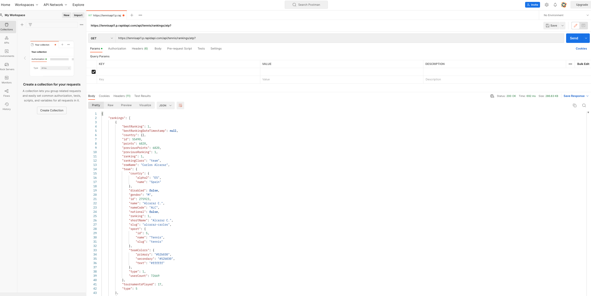
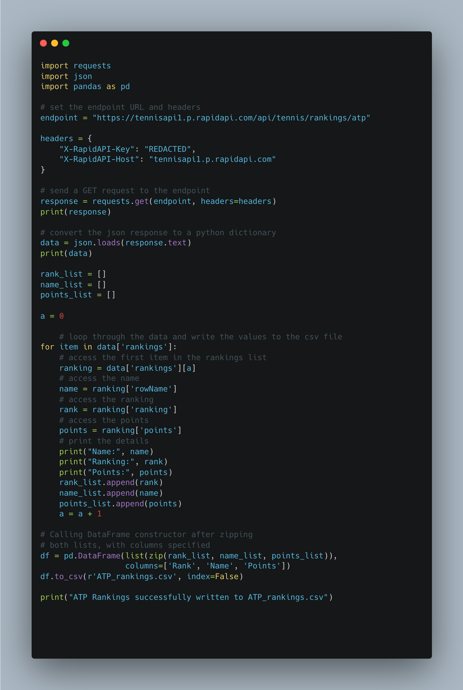
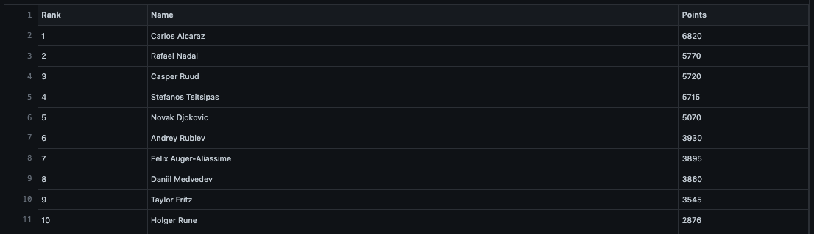

Hi all,
The season is upon us!
Yes I'm referring to the fact the Australian Open has begun. Who's excited? I certainly am. It is my plan to go to all 4 Grand Slams at some point in my lifetime. I'd assume that's quite an easy bucket list task, but funnily enough living in London the only one I've done so far is the French Open.
Tell you what I was excited to see the news that they will slowly be making Tennis data more available. Unfortunately not to the general public, so Nick Kyrgios if you are reading this, I am happy to come consult on your team.

Today we are going to look at accessing data through an API.
What do we really mean when we talk about API's? In typical fashion we overcomplicate the data world, but really it is just an intermediary that sends a message of a request, i.e give me this data/ information, and then brings back a response. Kind of like writing a letter, posting it, and then someone responding to the letter with whatever the answer to the question you asked.
The reason I use the postman analogy is because someone conveniently created an application called postman where we can see that request happen. I'll be writing a follow up blog at some point about how to use Postman when accessing Strava data, but for now I'll simply use it to showcase the request in action.

There are plenty of different API connectors you can retrieve information from. Today we will be using a website called RapidAPI. Feel free in your own time to look at some of the other API's available.
(You will need to make an account, I am assuming if you want to learn about API's I don't need to explain how to click sign up to a website!)
The one we will demo today is the TennisAPI1

What are some things we should probably know?
Latency is pretty much how quick or slow the API is. (I.e the delay time of your post, luckily there are no Christmas strikes with API's)
End points refer to the url of where we want to get the information from. Just think of this as when you send a letter you have to write your recipients address on the envelope. (Yes I am going to continue this fairly shoddy analogy)
It's worth noting that the different end points retrieve different bits of data, we can see the URL update when we click through to the ATP Rankings end point.
Here is the url we want to get information from https://tennisapi1.p.rapidapi.com/api/tennis/rankings/atp

Next thing to consider is the API Key. Imagine you are sending your friend a personal letter, that you only want them to read. The key is your way of protecting the information so that only you can request it. In this case, we use it to retrieve the data required.
So how do I know what information we can get?
Okay well we can test the endpoints in an application called Postman. Postman is an API interface development tool, which will help you build test and modify API's. I.e Am I sending my requests to the correct place? Is it telling me the correct information? What do I need to amend to ensure save retrieval of the information?
Like I mentioned, the set up of postman will come in a future blog, but for now. How do we check our end point is correct,
Well we add in our url from the site.
We also need to add in our key. You'll see the key name is X-RapidAPI-Key, so I will need to add this to the headers section. I'll need to add the super long value for this key.

Once I've done this, I can click send.

The data it retrieves tends to be in JSON format. Fine for sending and retrieving data, but if I actually want to do anything substantial in a visualisation tool I will need to see this data probably in a dataframe/table/csv format.
This is where I load up python and recreate the steps there.

What does the code do?
First we want specific packages. One to help ups make requests, one to convert json format, and another to be able to build our data into a dataframe.
The endpoint like I mentioned is the custom url we go to retrieve our information.
The headers are taken from the API page.
We end up retrieving the data and it is in the json format, like when we tested it in Postman.
All we then do is take the attributes we want from this file and glue them together in a dataframe.

There we have it our nice shiny list of the Top 500 Mens Players in the ATP.
Hopefully this was somewhat useful for an introduction into API's. As always the code can be found on the Github repo under the title.
Going Further:
Why not try use a different endpoint and retrieve the information from it?
Why not try use a different API in it's entirety?
Why not try automate a flow that makes multiple requests a day / over a number of days?